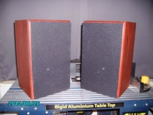
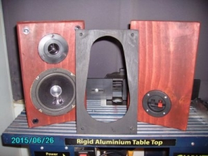
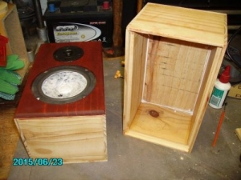
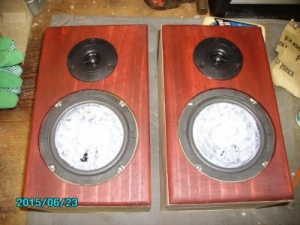
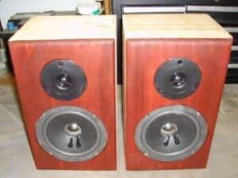
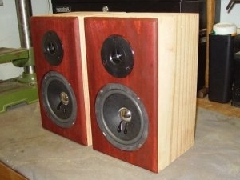

|
NAVIGATION
TOP of Page
MAIN Page
HOME Page
SYSTEM 3010
About the Speaker
Speaker Design
Listening Tests
Specifications
Crossover Network
|
About the Loudspeaker
|

The Finished Loudspeaker
|

Front and Rear with Baffle
|
The System 3010 Loudspeaker is a compact two way acoustic suspension bookshelf mounted loudspeaker, built from cheap
components I had readily available. This speaker could be used for demonstration in a low powered high fidelity system,
such as my homemade 10 watt per channel amplifier. The acoustic performance is somewhat similar to the Workshop system,
which shares the same bass driver, but has a brighter top end due to the use of a dome tweeter.
TOP
MAIN
HOME
Designing and Building the Loudspeaker
The System 3010 loudspeaker system was built to provide a reasonable background music source whilst I worked in the
backyard shed. This meant the design required a small footprint to fit on an elevated shelf with the other
speakers undergoing testing whilst still being able to withstand A/B testing with other designs. The design is a
small acoustic suspension sytems using a Jaycar AS-3010 5" Woofer/Midrange and an Altronics 3010 Dome Tweeter.
You can now guess why the speaker was called a System 3010.
The bass drivers had the cones doped with PVA to prevent cone breakup, I am not concerned about the two sections
having different impedences, as any decent modern amp should have no problem handling this. The crossover used is
simply a 4.7uF capacitor connected to the inphase tweeter as a 6dB/octave Butterworth filter, which seems to work
well. I stained the cabinets a rich red and used a decent set of speaker connector terminals on the rear panel.
|

Original Frames for Boxes
|

Doping the Cones
|
|

Front Baffle with Dried Cones
|

Frames Ready for Grille Cloth
|
TOP
MAIN
HOME
Listening to the Loudspeaker
Played in the quieter moments at night, when interest in the TV programs had waned. Best listened to with the room
lighting off, in the dim glow of the amplifier indicator lamps:
1) Joni Mitchell - Blue. Not her best album as she had remixed some of my favourite songs and redone the vocals.
2) Tears for Fears - The Seeds of Love. Some of the tracks on this album are so good they cause a shiver down the spine.
Outstanding songs are 'Woman in Chains', 'Standing on the Corner of the Third World' and 'Year of the Knife'. Highly
detailed and well recommended.
3) K.D. Lang - Ingenue. Mellow vocals well recorded.
4) Jeff Buckley - Grace. Excellent vocals and support band.
All were played at the maximum volume available before distortion set in - which turned out to be reasonably loud.
The speakers are improving as they get run in - like the first 5000km in a car. A lot of the minor resonances
disappear and the sound becomes more natural and less forced.
One thing stands out with the small speaker driver units used; the system has excellent transient response giving it
a real 'stop/start' effect, ie: no time smearing of notes. This is especially noticeable on the synthesizers and
percussion used in the Tears for Fears album.
The bass response is surprisingly balanced, so that I do not miss the deeper bass of much bigger speakers. I am really
getting to appreciate this little system and look forward to further listening. They are currently sitting on a shelf
overlooking my computers and giving my set of Bowers & Wilkins DM-303's a run for their money.
As before, the bass response does not seem lacking and the speaker has an fairly balanced sound with slight brightness
in the midrange - which roughly approximates the American West Coast sound. They sound great on Rock Music at normal
listening levels.
Two observations:
The bad - They are low powered, as the bass driver is only rated at 5 watts. Turning up the wick up from my 37
watt/channnel amplifer drives them into distortion. They are really meant for normal listening levels when driven by a
low powered amplifier such as my homemade 13.7 watt/channel, as described on these pages.
The good - The sound quality is quite good, with very good definition and pinpoint imaging. When listening at
normal levels, I can pick out quite a lot of fine detail and hear things for the first time from familiar CD's.
These speakers would be described as a 'near field monitor', useful when monitoring a recording from a mixing desk,
or for placing on a nearby shelf whilst listening in the computer room.
TOP
MAIN
HOME
Loudspeaker Specifications
|
Specifications :
|
Two Way Acoustic Suspension Bookshelf
|
Dimensions :
|
160mm(w), 160mm(d), 270mm(h)
|
Enclosure Volume :
|
3.8 litres lined
|
|
Freq. Response :
|
approx 120hz-18khz @ -3dB
|
|
Efficiency :
|
88dB SPL @ 1W @ 1 metre
|
|
Impedence :
|
4.0 ohms typical
|
|
Power Handling :
|
10W rms
|
|
Crossover :
|
5,100Hz 1st Order Network, 4.7uF capacitor to tweeter.
|
|
Imp. Correction :
|
Nil
|
|
Bass Driver :
|
Response AS-3010 125mm Paper Cone Mid/Bass
|
|
Tweeter Driver :
|
Altronics 3010 19mm Dome Tweeter
|
TOP
MAIN
HOME
|